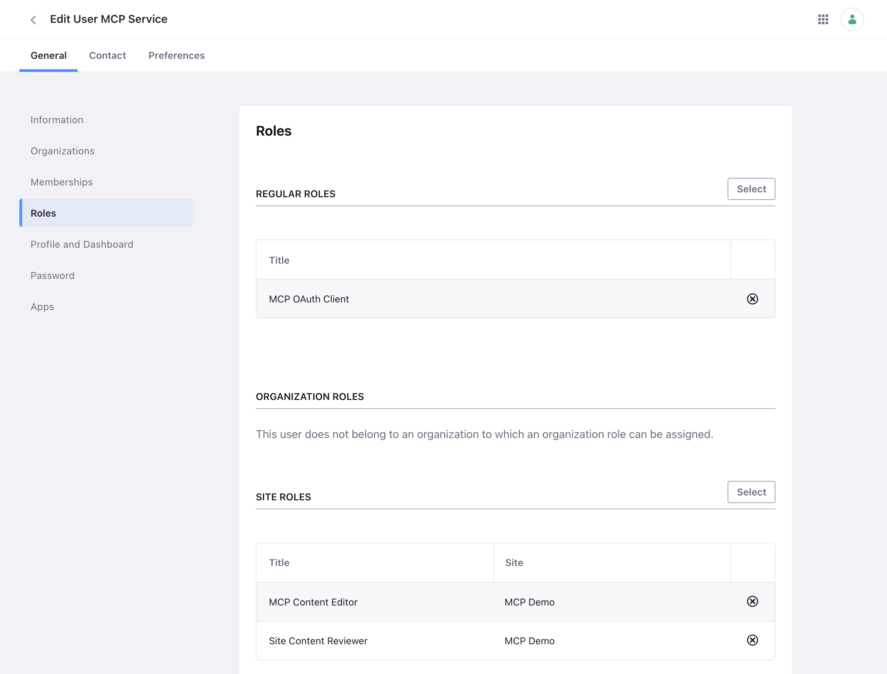

Creating the Service User
The server acts as one Liferay user, with least privilege. Create it once per Liferay, as an administrator, before you follow the page for where your Liferay runs.
- Step 1: Turn Off Email Verification for New Users
- Step 2: Create the User
- Step 3: Create Its Roles
- Step 4: Assign Them
- Changing the Client Extension
- Next Steps
Step 1: Turn Off Email Verification for New Users
If it’s on: Control Panel → Instance Settings → User Authentication → clear Require strangers to verify their email address?, and click Save. Otherwise the new user can wait on the Verify Email Address page, and every API call as it fails with 403.
Step 2: Create the User
Create a user with the screen name mcp-service, for example with the email mcp-service@example.com. The OAuth 2 client extension acts as the user with that screen name; to use another one, see Changing the Client Extension.
Give it a password nobody uses, since OAuth doesn’t need one, and make sure it isn’t required to change it at its first sign-in (the password policy’s Change Required), or every API call as it fails with 403.
Step 3: Create Its Roles
-
A site role, for example MCP Content Editor, in Control Panel → Users → Roles, with these permissions. It lets the user view content, and add and edit what the write tools write, but not delete or change permissions:
Resource Actions Web Content Add Article, Add Folder, View Web Content Article Update, View Web Content Folder Add Article, Add Subfolder, View Documents and Media Add Document, View Document Update, View Documents Folder View Page View Blogs / Blogs Entry Add Entry / Update, View Categories / Category / Vocabulary Add Category, Add Vocabulary / Add Category, Update, View / View Navigation Menus / Navigation Menu Add Navigation Menu / Update, View Knowledge Base / Article / Folder Add Article, Add Folder / Update, View / Add Article, View Wiki / Wiki Node / Wiki Page Add Node / Add Page, View / Update, View Message Boards / Category / Message Add Message, Reply to Message / Add Message, View / Update, View Form View Leave out the areas you don’t want the AI assistant to write.
-
A regular role, for example MCP OAuth Client, with Control Panel → Security → OAuth 2 Administration → OAuth 2 Application: Create Token. Liferay only issues a token that acts as a user who has it.
Step 4: Assign Them
- Assign the regular role to the user.
- Make the user a member of each site the server should work in, and give it the site role there. If it should review content in a workflow, also give it Site Content Reviewer in those sites.
The user’s Roles page then shows the regular role, and the site roles in each site:

For signed-in page inspection, also create a second, view-only user that is only a site member, with no roles. Without it, the page inspection tools view pages as a guest.
Changing the Client Extension
The ready-made liferay-mcp-oauth.zip acts as mcp-service, and lets the server write. To change either, edit the client-extension.yaml it’s made from, and build your own zip with a Liferay Workspace:
userAccountScreenName: another screen name.scopes: changeLiferay.Headless.Delivery.everythingtoLiferay.Headless.Delivery.everything.read, and the Admin Content, Admin Workflow and Batch Engine scopes to their.readversions, to make the server read-only. Liferay enforces it.
Save it as client-extension.yaml in a folder of your workspace’s client-extensions folder, for example client-extensions/liferay-mcp-oauth/, and build it from that folder:
blade gw build
The zip is dist/liferay-mcp-oauth.zip in that folder. Keep the file’s .serviceAddress and .serviceScheme lines: they give the application the home page Liferay requires, and without them Liferay refuses to create it.
Checked on Liferay DXP 2025.Q1.29: the zip built this way created the application and its credentials, and the server connected with them.
Next Steps
Continue with the page for where your Liferay runs: